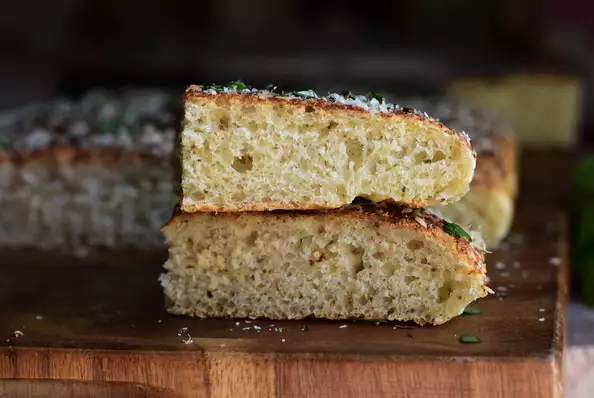

Basil Focaccia

Description
This is my mother-in-law's recipe. It's easy and delicious. You can make it with an olive oil topping or tomato sauce topping
Ingredients
- 3 cups all-purpose flour
- 3 tablespoons white sugar
- 1 (.25 ounce) package instant dry yeast
- 1 teaspoon salt
- 1 ½ cups warm water (115 degrees F/46 degrees C)
- 1 tablespoon olive oil, or as needed
- ⅛ teaspoon garlic salt, or to taste
- ½ cup grated Parmesan cheese
- 1 tablespoon dried basil
Directions
- Whisk together 3 cups flour, sugar, yeast, and salt in a mixing bowl. Add warm water and mix well. If dough is too sticky, mix in another 1/2 cup flour.
- Oil a bowl. Fill another, larger bowl halfway with hot water.
- Turn dough onto a floured surface and knead until smooth. Form into a ball and place in the oiled bowl, turning to coat all sides with oil. Place the oiled bowl in the bowl of hot water. Cover and let rise until doubled in size, about 1 hour.
- Preheat the oven to 375 degrees F (190 degrees C). Oil a 9x13-inch baking pan.
- Turn dough out onto a floured surface and let rest for 5 minutes. Transfer dough to the prepared baking pan. Press and dimple with your fingers to even out the thickness and work it into the corners to fit. Brush lightly with olive oil, then sprinkle with garlic salt, Parmesan cheese, and finally basil.
- Bake in the preheated oven until deep golden brown, 25 to 30 minutes. Cut into 8 squares.
Previous page
Volver a Home